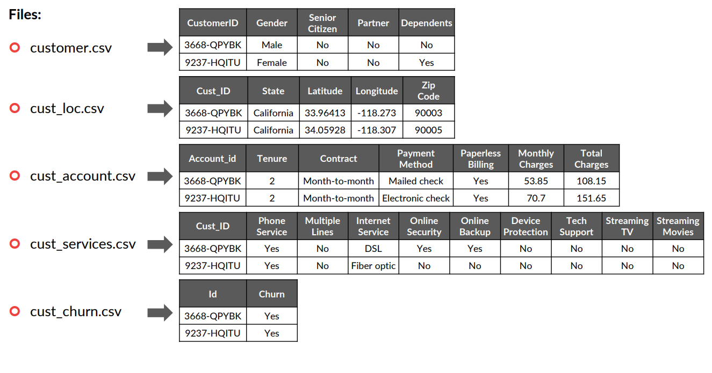

CHURN ANALYSIS FOR A TELECOM COMPANY
Using the Power BI software for Exploratory Data Analysis (EDA) of a phone and internet company's customer data.
PROBLEM STATEMENT
As an analyst working for a telecom company that provides home phone and internet services to 7,043 customers across Southern California. A new competitor has moved into the area, and the company you are working for is concerned about losing its existing customers. It wants to come up with a solution so that it does not have to worry about customers leaving.
OBJECTIVE
Understand which services provided by the company are not performing well, so that the product team can improve the quality of such services and ensure the existing customers are happy with them.
Identify which variables are affecting the customers’ churn, based on existing data.
Identify the services that are being received well by the customers so that the company can use them to attract new customers.
Identify high-value customers so that the company can provide them with a premium membership to retain them for as long as possible.
DATA DESCRIPTION
The data source consists of 5 files with corresponding columns and sample data for each column
DATABASE DIAGRAM

VISUAL DATA AND GET INSIGHT USE POWER BI